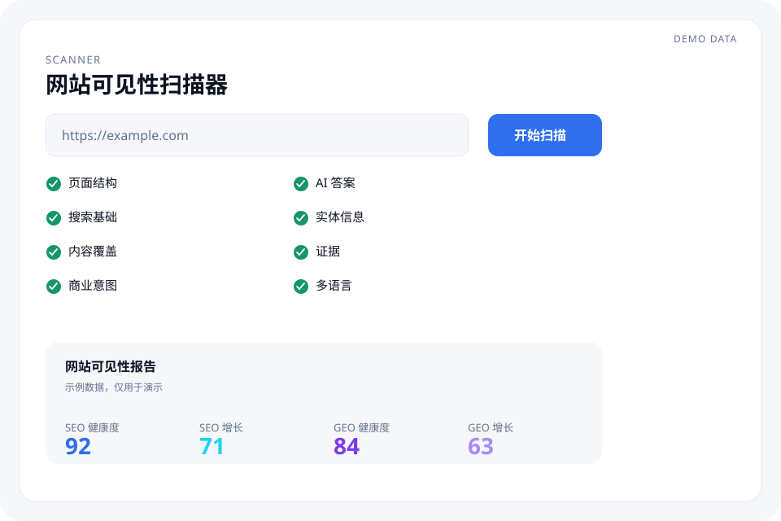

SEARCH & AI VISIBILITY
Help customers find you in search and AI.
Google, ChatGPT, Gemini, and similar doors are changing how customers discover a company. Mika checks what is wrong on the site, which search demand is still uncovered, and whether AI can understand your company, products, and content.
- Page structure
- Search basics
- Content coverage
- Commercial intent
- AI answers
- Entity information
- Evidence
- Languages
Sample data, for demonstration only
Send the site. This is the scope we review.
No phone number required. We reply by email.

The issue is often not a lack of pages. It is that the right people never find them.
Your site may be missing customers it could have reached.
01
The site exists. Customers still cannot find it.
Pages may be hard to crawl, the structure may be tangled, important pages may be poorly linked, or search demand may be uncovered.
02
Someone asks ChatGPT. The answer does not mention you.
Whether AI can recognize your company, products, services, and expertise depends on information that is clear, consistent, understandable, and checkable.
03
You know something is wrong, not what to fix first.
Mika turns a scan into problems, opportunities, and page-level actions so the first move is obvious.
One platform, from being found to being understood.
Mika does not stop at technical faults. It also watches visibility in search, content, commercial intent, and AI answers.
Now · Next
SEO healthCan search engines find and understand the site today? Crawl, pages, structure, links, technical issues.
GEO healthCan AI understand the company and products? Entities, direct answers, evidence, consistency.
SEO growthWhich real search demand is still uncovered? Topics, intent, depth, markets.
GEO growthWhich AI questions and answers are still open? Question gaps, answer gaps, citation opportunities.
SearchAI
Mika inspects the site. It does not stop at a score.
Finding a problem is not the end. The point is the next action.
01
ScanPages, architecture, links, topics, questions, entities, evidence, language, and images.
02
DiagnoseGroup findings as severe, important, or suggested.
03
BlueprintWhere it is, why it matters, what to change, which page, priority, and how to check.
04
Do the workYour team edits the site from the blueprint.
05
Scan againA later pass shows what improved.
The same four questions
After the scan, you see these four things.
This is not a second checklist. Each block returns to a question already on the page: can people find you now, can AI understand you, and what is still missing.
SEO health · now
Can search find you today?
This follows “the site exists, and customers still cannot find it.” Crawl, pages, and links are checked for what blocks discovery.
- Crawl and indexation
- Important pages are linked
- The page states what it is

SEO growth · next
Customers search for answers the site does not have.
This follows “which real search demand is still uncovered.” Topics, buying intent, and missing pages.
- Topics customers search
- Intent a page can support
- Pages still missing

GEO health · now
Can AI say who you are today?
This follows “someone asks ChatGPT, and the answer does not mention you.” Company, product, and evidence need to be clear and consistent.
- Company and products
- A direct answer
- Claims tied to evidence

GEO growth · next
Which questions can AI still not answer?
Each question is marked answered, partial, or uncovered. That is the next answer to add, not another score.
- Answered
- Partial
- Uncovered

Three checks that put those judgments on a real page.
Questions
Match each question to a page.
A question is either answered on a page, or marked still uncovered.
Entity and evidence
Who you are and what you sell have to agree.
Company, product, specs, uses, and evidence stay one set of facts.
Languages
Several languages, the same facts.
Names, specs, uses, and claims are compared across language versions.
Do not only tell me what is wrong.
Say what to change next: the problem, the reason, the action, the page, and how to check it.
- Example: a thin product page because definition, use, specs, and evidence are missing.
- Actions include those five additions, plus a FAQ.
- Priority, target URL, and a rescan sit on the same blueprint.

SEO & GEO knowledge
Find the problem, then find how to work on it.
Guides and articles on SEO, GEO, site improvement, and AI search live in one workspace.
SEO
Structure and search growth
Site structure, technical SEO, content, and search growth.
GEO
AI search and evidence
AI search, AI answers, entities, evidence, and citations.
Blog
Ongoing notes
Articles on SEO, GEO, AI search, and site growth.

Search is shifting from a list of links to a direct answer.
People still arrive from classic search, and they also ask ChatGPT, Gemini, and other AI search tools first. A company needs the site to be findable, to answer real questions, to be understood, and to support important claims with evidence. Mika keeps those questions in one visibility frame.
SearchSiteContentAI understandingAnswerCustomer
Who Mika is for
Founders
You want to know why the site is not bringing enough customers.
Marketing leads
You need to know which content to make next.
SEO and content teams
You want technical issues and content gaps found faster.
Export and international teams
You need multilingual pages and overseas search visibility checked.
Questions
What is an SEO audit?
An SEO audit checks whether a site can be crawled, and whether page basics, structure, and internal links are in place. Mika groups those findings by severity and turns them into next actions instead of a single score.
Why can a site still lack traffic after SEO work?
A site that loads can still miss the topics, intent, or pages customers search for. Mika separates “can this be found today” from “which demand is still uncovered.”
How is SEO different from AI search visibility?
SEO asks whether search engines can find and understand pages. AI search visibility asks whether systems such as ChatGPT or Gemini can understand the company and products from clear site information. They share the same facts and ask different questions.
What is GEO?
GEO is the work of making a site easier for generative systems to understand: entities, direct answers, and evidence. It is one Mika capability, not a concept you must learn before the product makes sense.
Why might ChatGPT or Gemini leave my company out?
The company, products, or evidence on the site may be unclear or inconsistent. Mika marks those gaps. It does not promise that a model will mention you.
Will Mika edit my website automatically?
No. Mika lists problems and suggested changes. Your team edits the site, then a later scan checks what changed.
How is Mika different from a typical SEO checker?
A typical checker stops at a problem list. Mika also looks at search growth, AI understanding, and evidence, then writes prioritized actions.
What is the knowledge base for?
It holds guides and articles on SEO, GEO, content structure, and AI search, so the terms in a scan have an explanation. It does not replace a look at your own site.
Does Mika cover multilingual sites?
Yes. It compares whether company names, product names, specs, uses, and claims stay consistent across language versions.
What does the free scan look at?
The request asks us to review signals around pages, structure, internal links, topics, questions, entities, evidence, language, and images. Follow-up is by email. Submitting the form does not instantly mint a score.
Send the website address.
We email the scan notes and later updates.